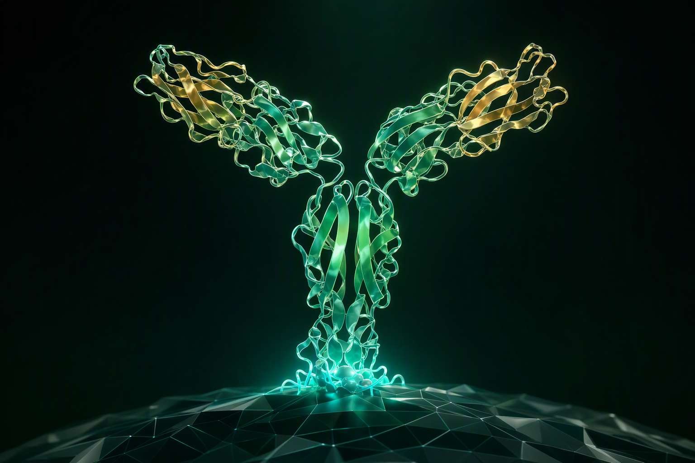
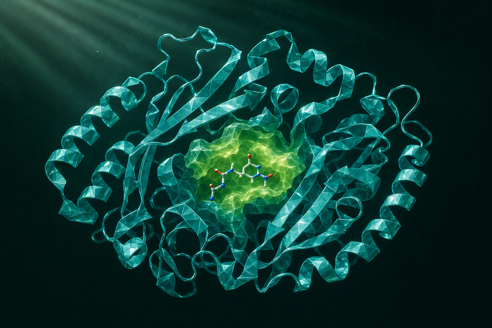

通过生成式蛋白质设计,拓展传统发现路径难以覆盖的候选空间,并支持精准识别、特定功能与复杂结合关系设计 —— 全部经湿实验验证。
面向 GPCR 与复杂跨膜靶点生成候选;利用 VHH 长 CDR3 进入狭窄缝隙,触及隐蔽表位与深口袋。
区分高度同源靶点的极小氨基酸差异;支持疾病相关构象的选择性识别。
按作用机制定义内化或受体调节功能:精准内化载体(ADC/RDC)、激动剂与变构调节剂。
构建跨靶点、保守区域或结构域的结合关系;调节多特异性的空间排布。

最多 3 周,从搁置靶点推进到可开发结合分子(计算设计 + 湿实验)。
VHH 是复杂多特异性药物的核心构件:15 kDa 小尺寸、高稳定性与长 CDR3,可实现组织渗透并进入隐藏口袋。从头设计 VHH 高特异性结合目标表位,无需羊驼免疫,采用经验证的人源化框架,仅采样 CDR 残基。
针对肿瘤特异性抗原 TGT1:在 70 个从头设计中发现 3 nM 亲和力、>200 倍选择性的命中分子 —— 可区分仅 2 个氨基酸差异的高度同源跨膜靶点,对健康器官零毒性风险。
4 个结合分子来自 12 个从头设计抗 TSLP IgG。无需免疫、原生人源化,由 AI 在经验证的人 IgG 框架上采样 CDR 残基。
CD93 是肿瘤异常血管生成的关键驱动因子。GeoFlow 设计的候选相比 Ref-Ab 展现更优的体外细胞结合与体内协同效应:11 个结合分子、15 倍 HCDR3 一致性、3 倍阻断(FACS)、2 倍表达(HEK293),VH+VL 序列一致性 85%,FR 胚系 +17%。
攻克「不可成药」靶点:可触达大而平坦的结合界面,支持口服给药,体内高稳定性、更低毒性。GeoFlow 支持线性、环状(二硫键环化、主链环化)、双环肽等多种格式的从头设计与优化,优化阶段可引入非天然氨基酸(NCAA)。
约 50% 设计(15/30)可结合;至少 4 个达个位数 nM / 亚 nM;Tm > 80°C,大肠杆菌表达量 > 20 mg/L。1 周设计,1 个月验证。
| 靶点 | 结合数 | 最优 KD (BLI) |
|---|---|---|
| PD-1 | 12/58 | 9 nM |
| PD-L1 | 15/30 | 0.3 nM |
| InsR | 19/43 | 16 nM |
| Nectin-4 | 8/30 | 3.8 nM |
多特异性 VHH 构件的精准结合动力学工程:合作方原预期 3+ 轮设计-验证,GeoFlow 仅 1 轮完成,设计数 ≤100。表达产量提升 8–10 倍,Tm > 70°C,>90% FR 人源性,KD 调控约 6p。
基于结构的 DENV 包膜(E)蛋白工程:保留四级构象表位、降低 ADE 风险,稳定化 DENV2 二聚体产量提升超过 50 倍,带来更安全且更有效的疫苗。
把产业性能目标转化为可计算、可验证的酶设计任务,通过「预测 — 实验 — 数据回流 — 再设计」持续迭代。
来自天然酶挖掘或从头设计,明确催化效率、热稳定性、酸碱耐受、底物特异目标。
GeoFlow 预测优势变体,组合多个性能目标,提出下一轮验证候选。
模型输出待实验验证的候选组合,计算端持续收敛候选空间。
表达与酶活、稳定性与选择性、工艺条件与重复性验证,正向结果进入下一轮。

按项目实际成熟度,区分工艺开发目标、小试验证与中试/放大验证结果。
G-7-ADCA 40–60 g/L(8h);收率 80–90%;区域选择性 ≥99%;工艺包拟适配 5–5000 L。
350 g/L 产物浓度;Vc 摩尔转化率 73%;5 L 规模纯度 ≥99%;估算总成本约 51 元/kg。
D-樟脑投料 150 g/L;48h 摩尔转化率 >96%;1 L 规模纯度 >98.7%,异龙脑杂质 <0.7%。
>150 g/L 产物浓度;摩尔转化率 >98%;合作工厂 50 L 中试,终产品纯度 >99%;综合成本目标 2.5 万元/吨。
注:7-ADCA 为合同约定的开发与验收目标;其余数据来自已完成的小试或合作工厂中试验证。
合作方式可独立选择、灵活组合、按需定制 —— 无论您处于哪个阶段,都能成为合作的起点;进入项目后,每个阶段都有明确的交付物与验收标准。
从一个科学问题或产品构想出发,共同评估技术可行性并定义设计任务。
在已有候选分子、数据或评价体系基础上,针对性优化亲和力、稳定性与成药性。
面向工艺放大、转化或产业落地需求,提供模型、计算设计与实验验证支持。
双方共同定义项目目标与实施路径,协同推进设计、验证、优化与决策。
标准项目交付流程
明确靶点、模态与性能目标,评估技术可行性(NDA 前提下)
共同定义设计任务书:表位、亲和力目标、成药性约束
GeoFlow 生成与多目标优选,约 1 周输出候选清单
表达、结合、活性与稳定性检测,数据全程同步
经验证的候选分子 + 完整性能数据包 + 后续研发建议